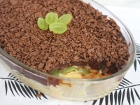

|
Essa receita combina a cremosidade do brigadeiro com o sabor rico e levemente crocante das nozes. Os brigadeiros são enrolados em pequenas bolinhas e podem ser decorados com nozes picadas por cima, dando um toque extra de textura e sabor. É uma opção irresistível para os amantes de brigadeiro e de nozes, perfeito para servir em festas, eventos especiais ou para desfrutar em qualquer momento de indulgência. |

|
Toda as receitas de sobremesasOs doces e as sobremesas são as grandes tentações da culinária, seja em uma festa, lanche ou no fim de uma refeição. Veja as receitas de doces e sobremesas simples, fáceis e rápidas, usando chocolate e leite condensado, e saiba como fazer guloseimas como brigadeiro, bombom e docinhos. |

|
Mouse de limão rápido Se você está procurando uma receita de mousse de limão rápida e fácil, veio ao lugar certo! Essa receita é feita com suco de limão, sem gelatina e leva apenas 4 ingredientes! Confira agora mesmo como fazer! |
|  |
Bombom de travessa Essa irresistível receita de bombom de travessa é uma sobremesa dos deuses que vai encantar seu paladar! Surpreenda sua família e convidados com essa receita fácil de preparar, perfeita para adoçar momentos especiais. Satisfação garantida em cada colherada! |